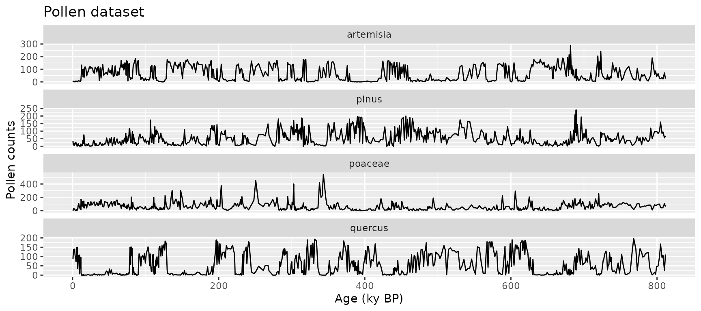
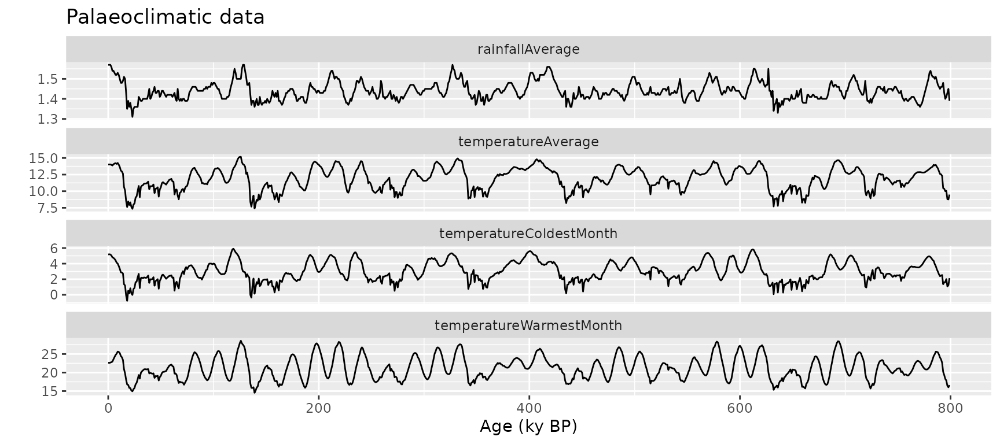
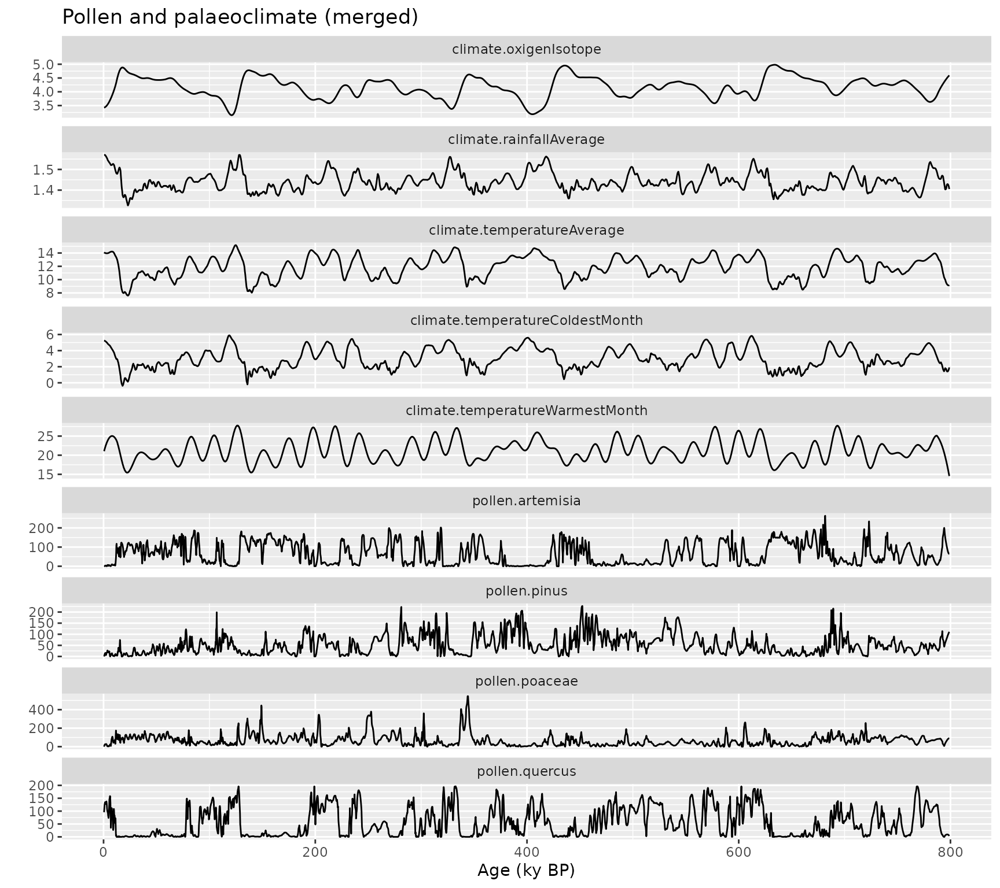
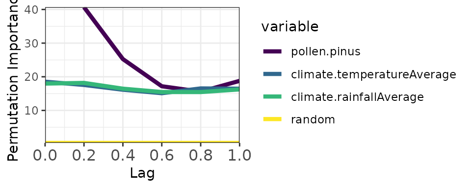
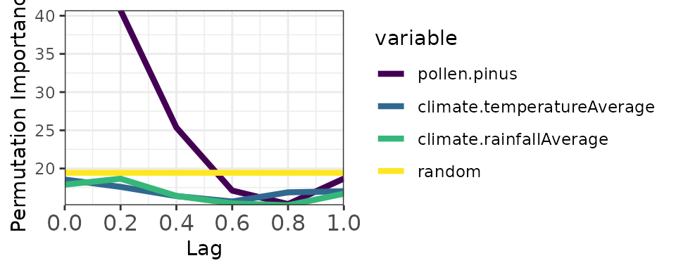

Working with memoria
working_with_memoria.RmdThis article walks through the complete memoria workflow for quantifying ecological memory in time series data consisting of at least one response and one predictor.
Ecological Memory
The package memoria helps quantify how past and
concurrent events shape the state of a system. This concept is
summarized in the figure below:
 The blue
and green curves represent the values of a biotic response
The blue
and green curves represent the values of a biotic response
y and a driver x over time. The vertical line
T represents the current time, while
T - lag represents a a previous time. The arrows represent
influence, as follows:
-
Endogenous memory: is the effect of past
yon presenty. -
Exogenous memory: is the effect of past
xon presenty. -
Concurrent effect: is the effect of present
xon presenty.
To assess these effects, memoria generates the lagged
data and trains the model
Where:
- and are the response and the driver.
- is the “current” time, and to , are the time lags.
- represents the endogenous memory across lags.
- represents the exogenous memory across lags.
- represents the concurrent effect.
- is a random term used to assess statistical significance.
The ecological memory pattern is quantified using permutation importance from Random Forest models. For each predictor, the algorithm shuffles its values and measures the decrease in predictive accuracy—larger decreases indicate stronger influence on the response.

The following sections demonstrate how to implement this workflow in
R using the memoria package.
Workflow
Merge datasets
The mergePalaeoData() function aligns and interpolates
datasets sampled at different resolutions. Consider two built-in
datasets:
- pollen: 639 samples with four pollen types (Pinus, Quercus, Poaceae, Artemisia)
- climate: 800 samples with climate variables (temperature, rainfall, etc.)
data(pollen)
ggplot(
data = gather(pollen, pollen.type, pollen.abundance, 2:5),
aes(x = age, y = pollen.abundance, group = pollen.type)
) +
geom_line() +
facet_wrap(vars(pollen.type), ncol = 1, scales = "free_y") +
xlab("Age (ky BP)") +
ylab("Pollen counts") +
ggtitle("Pollen dataset")
data(climate)
ggplot(
data = gather(climate, variable, value, 2:5),
aes(x = age, y = value, group = variable)
) +
geom_line() +
facet_wrap(vars(variable), ncol = 1, scales = "free_y") +
xlab("Age (ky BP)") +
ylab("") +
ggtitle("Palaeoclimatic data")
Merge and interpolate into a regular time grid:
pollen_climate <- mergePalaeoData(
datasets.list = list(
pollen = pollen,
climate = climate
),
time.column = "age",
interpolation.interval = 0.2
)
#> Argument interpolation.interval is set to 0.2
#> The average temporal resolution of pollen is 1.27; you are incrementing data resolution by a factor of 6.35
#> The average temporal resolution of climate is 1; you are incrementing data resolution by a factor of 5
str(pollen_climate)
#> 'data.frame': 3993 obs. of 10 variables:
#> $ age : num 0.5 0.7 0.9 1.1 1.3 1.5 1.7 1.9 2.1 2.3 ...
#> $ pollen.pinus : num 0 2.5 6.97 10.64 13.39 ...
#> $ pollen.quercus : num 95.6 109.4 120.1 127.7 132.6 ...
#> $ pollen.poaceae : num 0 9.55 16.79 21.76 24.76 ...
#> $ pollen.artemisia : num 0 0 0.672 1.696 2.516 ...
#> $ climate.temperatureAverage : num 14.1 14.1 14 14 14 ...
#> $ climate.rainfallAverage : num 1.57 1.57 1.57 1.57 1.57 ...
#> $ climate.temperatureWarmestMonth: num 21 21.3 21.5 21.7 21.8 ...
#> $ climate.temperatureColdestMonth: num 5.25 5.24 5.23 5.22 5.2 ...
#> $ climate.oxigenIsotope : num 3.43 3.43 3.43 3.44 3.44 ...
ggplot(
data = gather(pollen_climate, variable, value, 2:10),
aes(x = age, y = value, group = variable)
) +
geom_line() +
facet_wrap(vars(variable), ncol = 1, scales = "free_y") +
xlab("Age (ky BP)") +
ylab("") +
ggtitle("Pollen and palaeoclimate (merged)")
Create lagged data
The prepareLaggedData() function organizes data into the
lag structure required by the model. Each sample of the response is
aligned with antecedent values of itself and the drivers.
pollen_climate_lagged <- prepareLaggedData(
input.data = pollen_climate,
response = "pollen.pinus",
drivers = c("climate.temperatureAverage", "climate.rainfallAverage"),
time = "age",
oldest.sample = "last",
lags = seq(0.2, 1, by = 0.2)
)
str(pollen_climate_lagged)
#> 'data.frame': 3988 obs. of 19 variables:
#> $ pollen.pinus__0 : num 0 2.5 6.97 10.64 13.39 ...
#> $ pollen.pinus__0.2 : num 2.5 6.97 10.64 13.39 15.02 ...
#> $ pollen.pinus__0.4 : num 6.97 10.64 13.39 15.02 15.62 ...
#> $ pollen.pinus__0.6 : num 10.6 13.4 15 15.6 14.5 ...
#> $ pollen.pinus__0.8 : num 13.4 15 15.6 14.5 10.9 ...
#> $ pollen.pinus__1 : num 15 15.6 14.5 10.9 6 ...
#> $ climate.temperatureAverage__0 : num 14.1 14.1 14 14 14 ...
#> $ climate.temperatureAverage__0.2: num 14.1 14 14 14 14 ...
#> $ climate.temperatureAverage__0.4: num 14 14 14 14 14 ...
#> $ climate.temperatureAverage__0.6: num 14 14 14 14 14 ...
#> $ climate.temperatureAverage__0.8: num 14 14 14 14 14 ...
#> $ climate.temperatureAverage__1 : num 14 14 14 14 14 ...
#> $ climate.rainfallAverage__0 : num 1.57 1.57 1.57 1.57 1.57 ...
#> $ climate.rainfallAverage__0.2 : num 1.57 1.57 1.57 1.57 1.57 ...
#> $ climate.rainfallAverage__0.4 : num 1.57 1.57 1.57 1.57 1.57 ...
#> $ climate.rainfallAverage__0.6 : num 1.57 1.57 1.57 1.57 1.57 ...
#> $ climate.rainfallAverage__0.8 : num 1.57 1.57 1.57 1.57 1.56 ...
#> $ climate.rainfallAverage__1 : num 1.57 1.57 1.57 1.56 1.56 ...
#> $ time : num 0.5 0.7 0.9 1.1 1.3 1.5 1.7 1.9 2.1 2.3 ...
#> - attr(*, "response")= chr "pollen.pinus"
#> - attr(*, "drivers")= chr [1:2] "climate.temperatureAverage" "climate.rainfallAverage"
# Check attributes (used by computeMemory for auto-detection)
attr(pollen_climate_lagged, "response")
#> [1] "pollen.pinus"
attr(pollen_climate_lagged, "drivers")
#> [1] "climate.temperatureAverage" "climate.rainfallAverage"Note on oldest.sample: Set to
"last" when the oldest sample is at the bottom of the
dataframe (typical palaeoecological convention). Set to
"first" if the oldest sample is at the top.
The output columns follow a naming convention:
-
pollen.pinus__0: Current response value -
pollen.pinus__0.2,pollen.pinus__0.4, etc.: Endogenous terms -
climate.temperatureAverage__0,climate.temperatureAverage__0.2, etc.: Concurrent effect and exogenous terms
Compute memory
The computeMemory() function fits Random Forest models
on the lagged data. It measures variable importance using permutation,
which is robust to multicollinearity and temporal autocorrelation.
Two benchmark modes are available for significance testing:
-
"white.noise": Random values without temporal structure (faster) -
"autocorrelated": Random walk with temporal structure (more conservative, recommended)
The model runs multiple times (repetitions),
regenerating the random term each time, then computes percentiles of
importance scores.
# Simplified call - response and drivers auto-detected from lagged data attributes
memory_output <- computeMemory(
lagged.data = pollen_climate_lagged,
random.mode = "white.noise",
repetitions = 100
)
# Output structure (5 slots)
names(memory_output)
#> [1] "response" "drivers" "memory" "R2" "prediction"
# Memory dataframe (lowercase column names: variable, lag)
head(memory_output$memory)
#> median sd min max variable lag
#> 1 40.68684 1.0008733 39.36679 42.42693 pollen.pinus 0.2
#> 2 25.25720 0.7842455 24.07659 26.52628 pollen.pinus 0.4
#> 3 17.18441 0.9590776 15.63918 18.74209 pollen.pinus 0.6
#> 4 15.57412 1.4198263 13.37104 18.24264 pollen.pinus 0.8
#> 5 18.78565 1.0239717 16.99415 20.41879 pollen.pinus 1.0
#> 6 18.53973 1.8083562 15.58879 21.22939 climate.temperatureAverage 0.0
# Pseudo R-squared
head(memory_output$R2)
#> [1] 0.9910341 0.9910674 0.9909211 0.9908772 0.9909376 0.9908922
# Plot
plotMemory(memory_output)
Now with autocorrelated random mode (more stringent):
memory_output_autocor <- computeMemory(
lagged.data = pollen_climate_lagged,
random.mode = "autocorrelated",
repetitions = 100
)
plotMemory(memory_output_autocor)
Notice the yellow band (random benchmark) is higher with autocorrelated mode, providing a more conservative significance threshold.
Extract memory features
The extractMemoryFeatures() function summarizes memory
patterns into quantitative features:
memory_features <- extractMemoryFeatures(
memory.pattern = memory_output_autocor,
exogenous.component = c(
"climate.temperatureAverage",
"climate.rainfallAverage"
),
endogenous.component = "pollen.pinus",
sampling.subset = NULL,
scale.strength = TRUE
)
kable(memory_features)| label | strength.endogenous | strength.exogenous | strength.concurrent | length.endogenous | length.exogenous | dominance.endogenous | dominance.exogenous |
|---|---|---|---|---|---|---|---|
| 1 | 21.27227 | 0 | -0.8896378 | 0.4 | 0 | 0.4 | 0 |
Understanding the Output
Significance testing
Random Forest provides importance scores but no built-in significance test. The solution is to add a random benchmark variable: if a predictor’s importance equals or falls below the random variable’s importance, we cannot distinguish its contribution from noise.
In plots, predictors with importance above the yellow band (random median) are considered significant. The width of the band reflects uncertainty across model repetitions.
The autocorrelated benchmark is recommended for palaeoecological analysis because it accounts for the temporal structure inherent in these datasets.
Memory features
The extracted features quantify three aspects of ecological memory:
Strength: Maximum importance difference between a component and the random median. Higher values indicate stronger memory effects. Computed for endogenous, exogenous, and concurrent components.
Length: Proportion of lags where importance exceeds the random median. Values near 1 indicate persistent memory across all lags. Computed for endogenous and exogenous components only.
Dominance: Among significant lags, the proportion where one component (endogenous or exogenous) exceeds the other. Values near 1 indicate one component dominates; values near 0.5 indicate balance.
Batch Experiments
The memoria package includes functions for batch analysis of simulated pollen curves from the virtualPollen package:
-
runExperiment(): Apply the full workflow across multiple simulations -
experimentToTable(): Reshape experiment results into long format -
plotExperiment(): Visualize memory patterns across parameter combinations
These functions enable systematic exploration of how ecological
memory varies with species traits and sampling resolution. The
virtualPollen package must be installed separately from GitHub
(devtools::install_github("BlasBenito/virtualPollen")).
Summary
The complete workflow:
-
mergePalaeoData()- Align datasets with different resolutions -
prepareLaggedData()- Create lag structure -
computeMemory()- Fit Random Forest and compute importance -
plotMemory()- Visualize the memory pattern -
extractMemoryFeatures()- Quantify memory characteristics